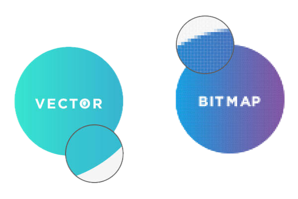

Compressie is het verkleinen van de hoeveelheid gegevens die nodig is om een bestand op te slaan. Hierdoor neemt een bestand minder opslagruimte in en kan het sneller worden verstuurd.
Bij afbeeldingen is het belangrijk om een goede balans te vinden tussen bestandsgrootte en beeldkwaliteit. Er zijn verschillende manieren om afbeeldingen op te slaan en te comprimeren.
Afbeeldingen kunnen onder andere worden opgeslagen als bitmapafbeelding of als vectorafbeelding. Het belangrijkste verschil is de manier waarop de afbeelding wordt opgebouwd.
Een bitmapafbeelding bestaat uit een groot aantal kleine pixels. Iedere pixel bevat informatie over de kleur.
Een vectorafbeelding bestaat uit lijnen, vormen en andere objecten die wiskundig worden beschreven.
Hieronder staat mijn eigen afbeelding. Deze afbeelding is een voorbeeld van een bitmapafbeelding. Een bitmap bestaat uit pixels. Wanneer je ver genoeg inzoomt, kun je deze pixels uiteindelijk zichtbaar maken.
Dit laat zien waarom bitmapafbeeldingen vooral geschikt zijn voor foto's en afbeeldingen met veel details.

Deze video van Anya Smilanick legt het verschil tussen bitmap- en vectorafbeeldingen uit. De video bespreekt ook wanneer je welke soort afbeelding het beste kunt gebruiken.
In de video wordt uitgelegd dat een bitmapafbeelding uit pixels bestaat. Iedere pixel bevat informatie over de kleur en samen vormen alle pixels de afbeelding.
Bij een vectorafbeelding worden juist lijnen, vormen en objecten wiskundig beschreven. Hierdoor kan een vectorafbeelding groter of kleiner worden gemaakt zonder dat de kwaliteit minder wordt.
Bitmapafbeeldingen zijn daarom vooral handig voor foto's en afbeeldingen met veel details. Vectorafbeeldingen zijn bijvoorbeeld handig voor logo's, pictogrammen en eenvoudige tekeningen.
Gebruik bitmap wanneer je werkt met foto's of afbeeldingen met veel verschillende kleuren en details. Voorbeelden zijn foto's van mensen, landschappen en producten.
Gebruik vector wanneer je werkt met logo's, pictogrammen, diagrammen of andere afbeeldingen die uit duidelijke vormen bestaan. Deze afbeeldingen kunnen groot worden gemaakt zonder kwaliteitsverlies.